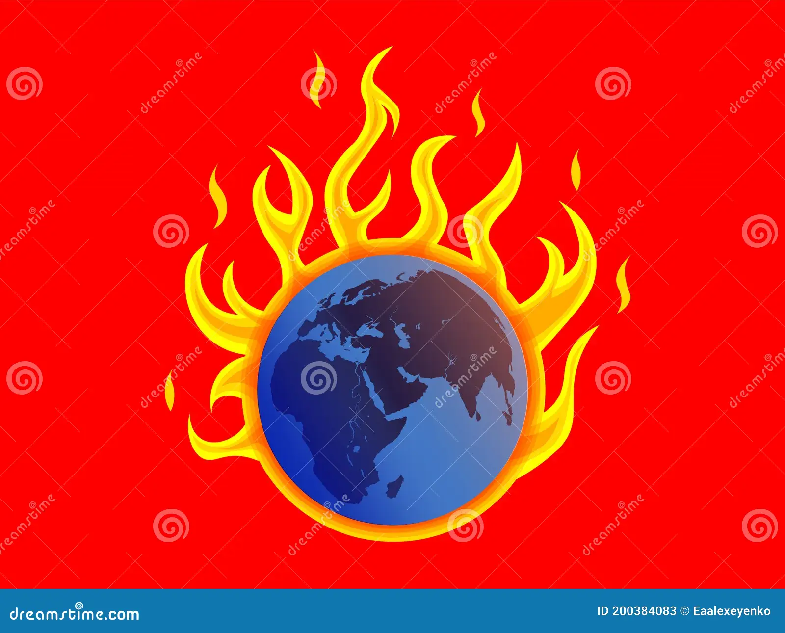

O efeito estufa, quando intensificado pelas atividades humanas, pode acarretar em uma série de malefícios para o meio ambiente e para a sociedade. Aqui estão alguns dos principais:
Aquecimento Global:
O aumento das emissões de gases de efeito estufa, como dióxido de carbono (CO2), metano (CH4) e óxido nitroso (N2O), contribui para o aquecimento global, resultando em um aumento da temperatura média da Terra. Isso pode levar a consequências devastadoras, como o derretimento das calotas polares, aumento do nível do mar e eventos climáticos extremos mais frequentes e intensos.
Mudanças Climáticas Drásticas:
O aquecimento global desencadeado pelo efeito estufa pode perturbar os padrões climáticos globais, causando secas prolongadas, inundações, tempestades mais intensas, ondas de calor e outros eventos climáticos extremos, afetando a agricultura, a disponibilidade de água, a segurança alimentar e a saúde humana.

Perda de Biodiversidade:
As mudanças climáticas induzidas pelo efeito estufa podem ameaçar a biodiversidade, levando à perda de habitats naturais, extinção de espécies e desequilíbrios nos ecossistemas terrestres e marinhos.
Impactos na Saúde Humana:
O aumento da poluição do ar devido à queima de combustíveis fósseis pode agravar problemas respiratórios, como asma e doenças cardiovasculares. Além disso, eventos climáticos extremos podem causar lesões, doenças relacionadas ao calor e disseminação de doenças transmitidas por vetores, como malária e dengue.
Prejuízos Econômicos:
As mudanças climáticas e seus efeitos adversos podem causar prejuízos significativos às economias locais e globais, incluindo danos à infraestrutura, perdas na agricultura e na pesca, interrupções nos serviços essenciais e custos crescentes com adaptação e reconstrução.
Insegurança Alimentar:
A alteração dos padrões climáticos pode afetar a produção agrícola e a disponibilidade de alimentos, aumentando a insegurança alimentar em regiões vulneráveis e contribuindo para a fome e a má nutrição.